1. Introducció
L'objectiu d'aquesta pràctica és simular el desenvolupament d'un projecte web en equip, organitzar els canvis mitjançant branques i documentar el procés amb evidències del treball realitzat.
El projecte parteix d'una estructura HTML inicial i es completa amb contingut, atributs HTML i estils CSS. Després es prepara la primera versió estable i s'hi incorpora una millora mitjançant un hotfix.
2. Què és Git?
Git és un sistema de control de versions distribuït. Permet registrar els canvis d'un projecte, consultar-ne l'historial, treballar en branques separades i integrar les modificacions quan estan preparades.
En aquesta pràctica s'han utilitzat ordres com git add per preparar canvis, git commit per registrar-los, git push per publicar-los al repositori remot i git merge per integrar branques.
3. Què és Git Flow i per què l'utilitzem?
Git Flow és una metodologia que organitza el treball en branques amb responsabilitats diferents. En aquesta activitat s'ha utilitzat per separar el desenvolupament de funcionalitats, la preparació de versions estables i les millores posteriors a la publicació.
- main: conté la versió estable del projecte.
- develop: integra les funcionalitats abans de preparar una versió.
- feature/*: permet desenvolupar una funcionalitat de manera aïllada.
- release/1.0: prepara i revisa la versió abans de publicar-la.
- hotfix/*: permet aplicar una correcció o millora sobre una versió estable publicada.
- gh-pages: branca destinada a allotjar la documentació del procés per publicar-la amb GitHub Pages, tal com demana l'enunciat.
Utilitzar aquest flux ajuda a mantindre ordenat l'historial, reduir interferències entre tasques i deixar constància de quan s'integra cada funcionalitat.
4. Procés de desenvolupament
4.1. Creació i preparació del repositori
L'Usuari 1 va crear el repositori remot, va preparar la branca main i va crear develop per integrar les funcionalitats abans de publicar una versió estable. També va incorporar els fitxers de HTML5 Boilerplate i va preparar l'estructura inicial de la pàgina.
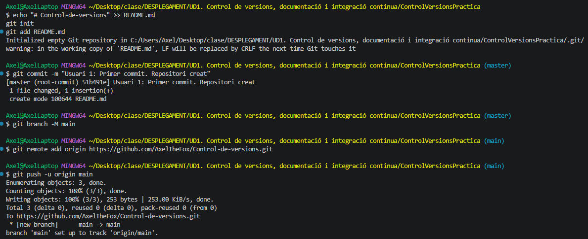
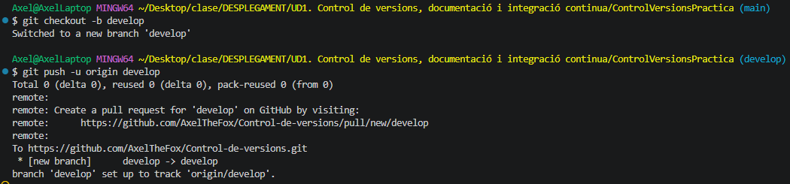
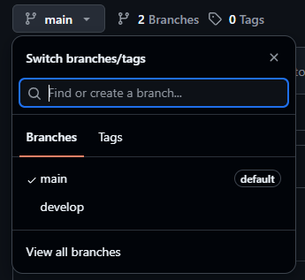
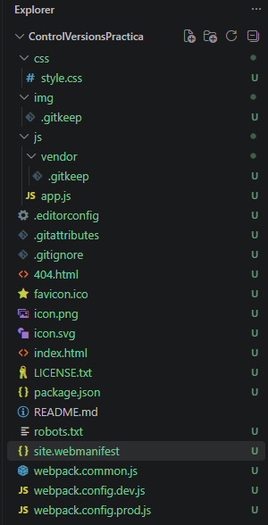
4.2. Estructura inicial del projecte
La primera pàgina va incloure la capçalera, la navegació, el contingut principal i el peu de pàgina. Els canvis es van registrar en Git i es van publicar al repositori remot.
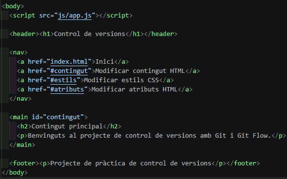
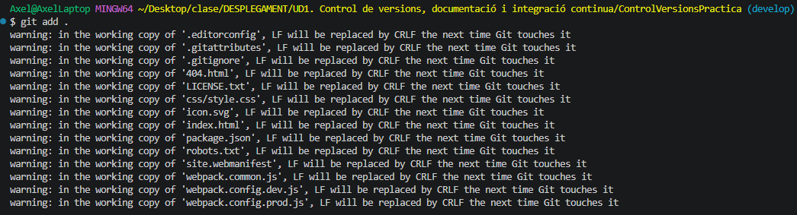
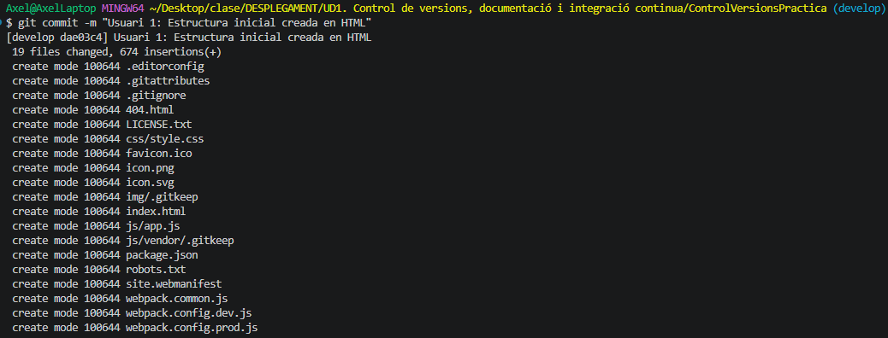
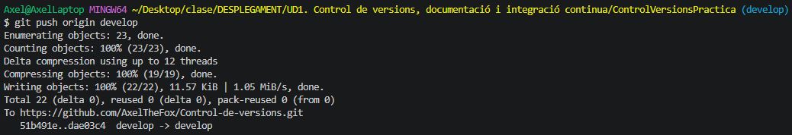
4.3. Feature de contingut HTML
L'Usuari 2 va treballar en feature/contingutHTML per afegir la presentació del projecte i els seus objectius. Després de registrar i publicar els canvis, la funcionalitat es va integrar en develop.
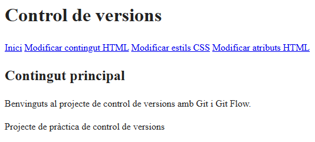
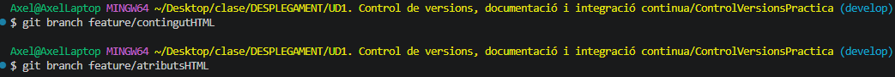
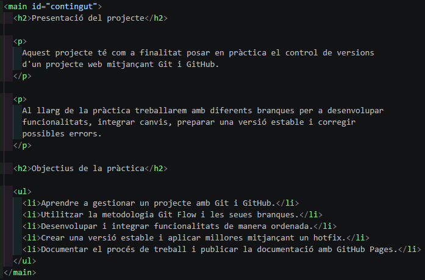
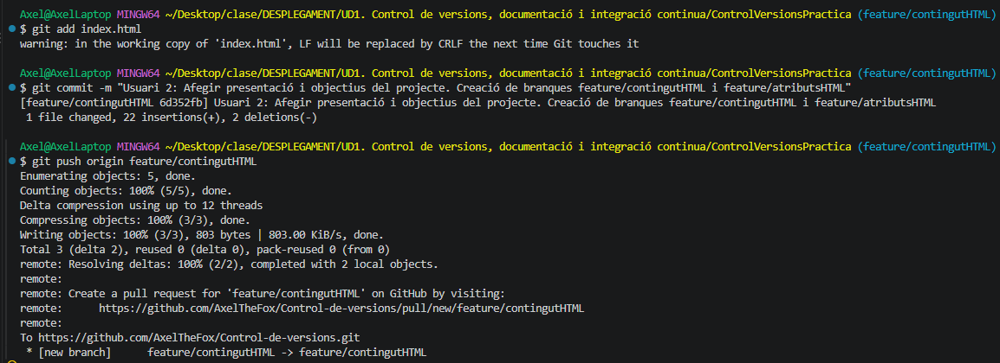
4.4. Feature d'atributs HTML
L'Usuari 2 va treballar en feature/atributsHTML. Com que la branca inicial no partia de la versió actualitzada de develop, es va recrear perquè incloguera la integració anterior. Després es van modificar atributs del document i es van integrar els canvis en develop.
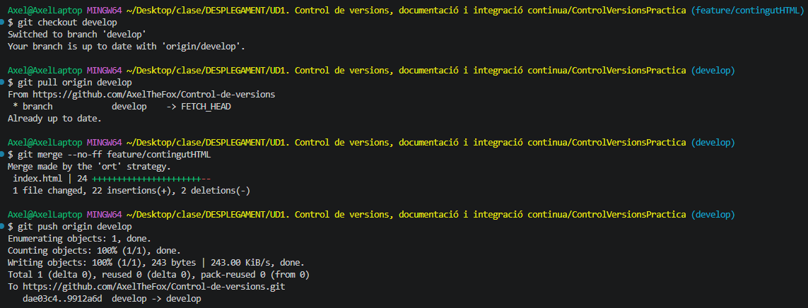
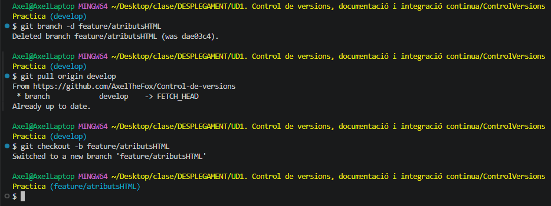
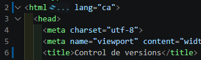
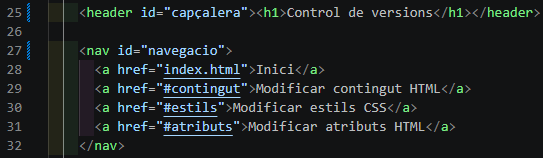
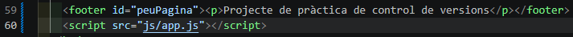
4.5. Feature d'estils CSS
L'Usuari 3 va crear feature/estilsCSS i va afegir estils per millorar la capçalera, la navegació, el contingut i el peu de pàgina. Després de comprovar el resultat, els canvis es van integrar en develop.
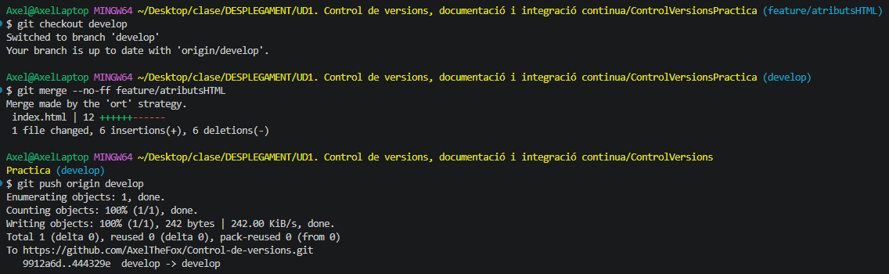
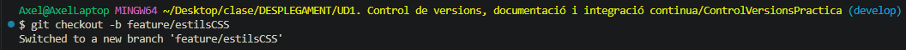
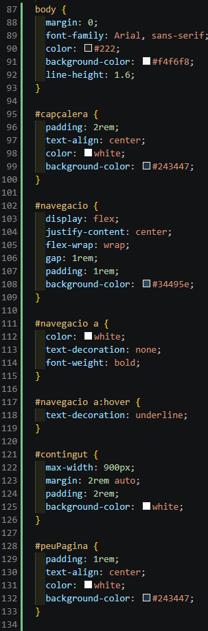
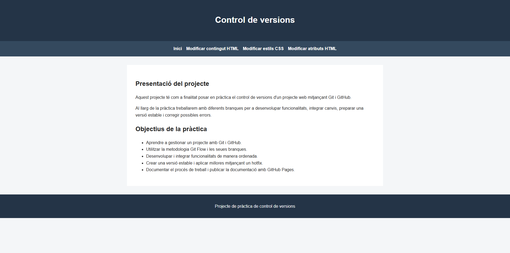
4.6. Preparació i publicació de la release v1.0
L'Usuari 3 va crear release/1.0 a partir de develop. Una vegada revisada la web, la release es va integrar en main, es va crear l'etiqueta v1.0 i es va sincronitzar develop.
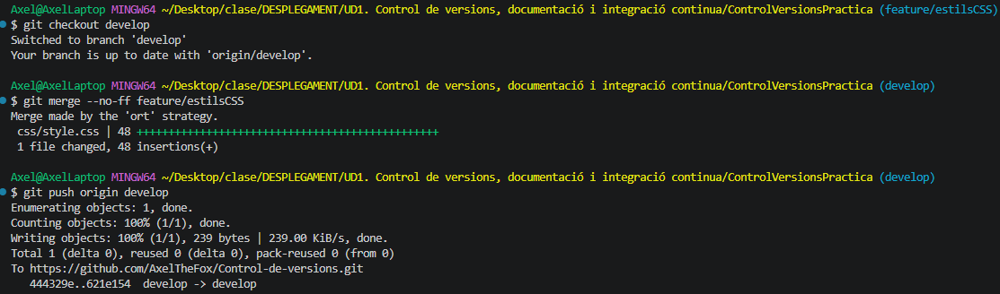
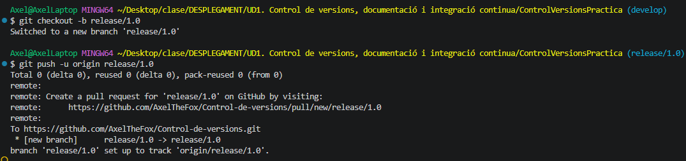
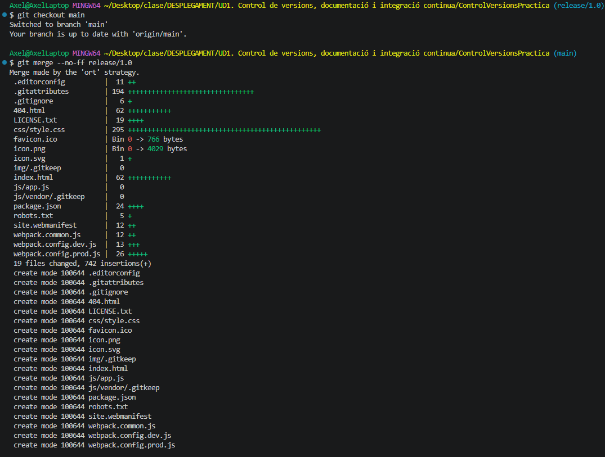
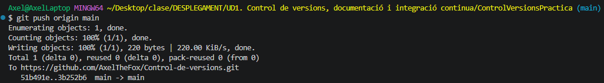
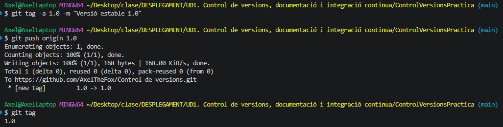
4.7. Hotfix de l'Usuari 1
Després de provar la versió estable, l'Usuari 1 va crear hotfix/milloresV_1_0 a partir de main i va afegir una explicació sobre les branques de Git Flow. La millora es va registrar i es va integrar en main i develop.
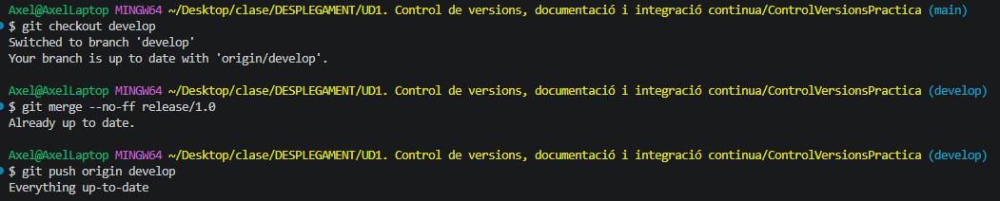
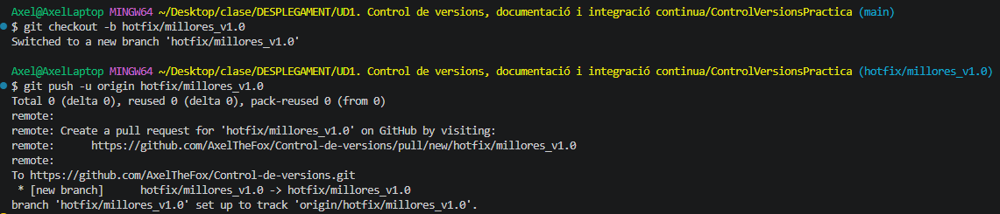
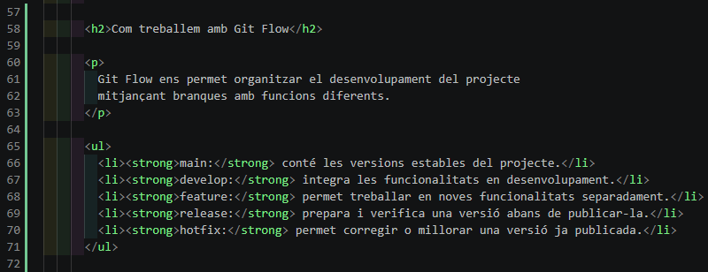
5. Conclusions
La pràctica ha permés posar en pràctica el control de versions amb Git i GitHub, treballar amb branques de funcionalitat, integrar els canvis en develop, preparar la release v1.0 i aplicar una millora posterior mitjançant un hotfix.
La documentació amb captures facilita seguir l'ordre de les operacions i comprovar les evidències del treball realitzat.
6. Comprovacions finals de l'enunciat
Abans de donar la pràctica per acabada, cal verificar també que GitHub Pages està configurat per publicar aquesta branca i que s'ha creat el projecte de GitHub amb les features i el hotfix, així com donar accés de col·laborador a antoni-gimenez. No s'afegeix cap afirmació de compliment d'aquests punts sense haver-los comprovat.